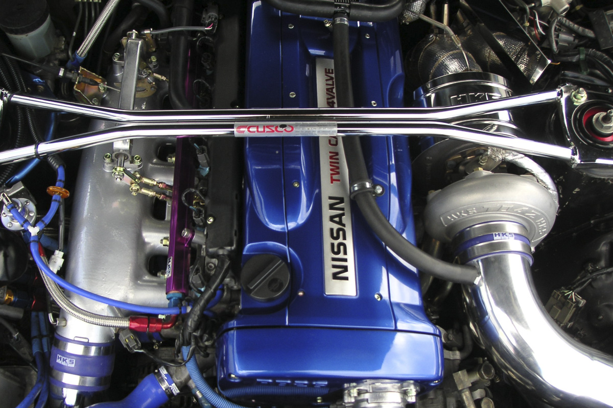

MOTOR

El Nissan Skyline GTR R34 cuenta con el motor RB26DETT, que también había aparecido en los Skylines R32 y R33 GTR. El RB26DETT es un motor de seis cilindros en línea biturbo de 2.6 litros. El bloque del motor es de hierro fundido, con la culata de aleación de aluminio con 24 válvulas en total. El turbocompresor está cubierto por un conjunto de dos turbos paralelos; Unidades de cerámica T25. Para cuando el R34 GTR terminó la producción, la potencia de salida declarada era la cifra más alta de 316bhp